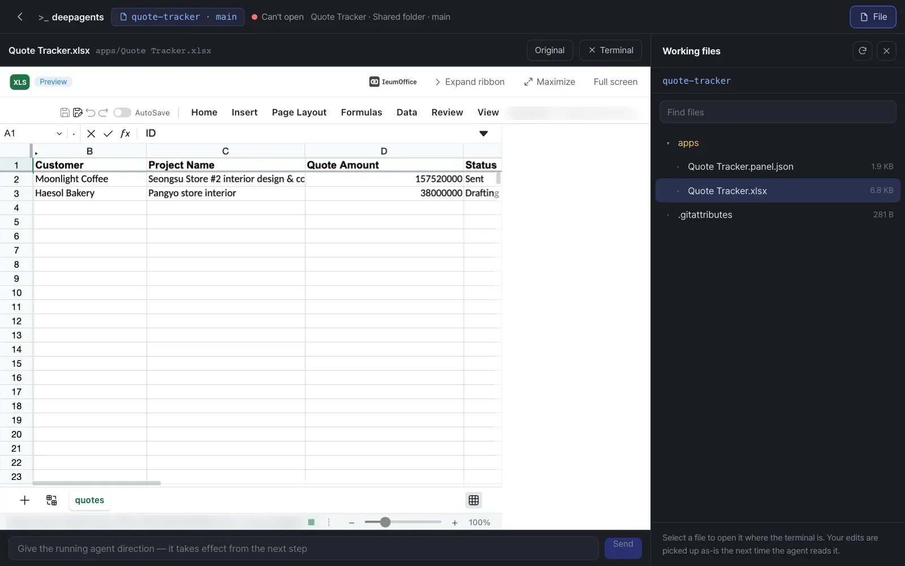

Chat is enough for most work. But when an agent creates dozens of files and runs commands (code, data cleanup, making videos), you'll want to look inside its working folder and get your hands on it. The Workroom is the screen that opens an agent's working folder with a file list, a file viewer and a terminal. For steps handled by Claude Code or Codex, that agent's session carries on right in the terminal's main view.
Up to Chapter 22, team lead Jinyoung Jang turned the Moonlight Coffee work into a process and fixed it, using nothing but chat, the editor and the Improve screen. In Part 7 you widen your view to growing and running this system. The first chapter is the Workroom, which opens the working folder where agents work.
Chat or Workroom — which to use when#
| When you want to | Chat | Workroom |
|---|---|---|
| Fix one document or one table | ✓ Editor + conversation (Chapter 7) | |
| Get a result that's just a few files | ✓ Comes as cards | |
| See the intermediate files and scripts an agent made | ✓ File list | |
| Edit by hand a file an agent wrote and pass it to the next step | ✓ Edit and save in the file viewer | |
| Tell a running agent to change direction | ✓ Steering box | |
| Run commands yourself (view the change history, move files) | ✓ Terminal | |
| Continue together on a step handled by Claude Code or Codex | ✓ That session is the main view |
The Workroom opens a window (a shell) that really runs commands on the server. So who can get in is restricted: the step's owner and the process participants, the owner of that conversation, members with edit access or higher for a shared folder (run access or higher for a variation), and admins. The terminal connects with a one-time ticket each time it opens, and secret settings hidden on the server aren't passed to the terminal.
Where to open the Workroom#
| From | What opens | Terminal main view |
|---|---|---|
| View actions on a process step → Open Workroom | The working folder of the agent that ran that step | That Claude Code session if Claude Code handled the step; otherwise a shell |
| Workroom on a shared folder screen | The folder's baseline (main). Edit and save, and one change record is left | Shell |
| Workroom on a variation screen | My working copy of that variation | Shell |
| A file card left in a conversation folder (Open in Workroom) | That conversation's working folder, with the file open | Shell + steering |
Try it 1 — Open a shared folder in the Workroom#
The data for the Quote Tracker you made in Chapter 12 is in the shared folder Quote Tracker. Click Folders at the top → Quote Tracker → Workroom in the header.
The screen is split into three parts.
- Center — Terminal: a shell that starts in that folder. If several people open the same Workroom, they see the same screen together.
- Right — Working files: the folder's file list and search. Click a file and it opens where the terminal is (✕ Terminal takes you back). IeumOffice documents, images and Markdown open in the same viewers as in shared folders.
- Bottom — Steering: sends a running agent a message like "from the next step on, do it this way" (it only matters while an agent is running).
In Working files, open apps and click Quote Tracker.xlsx. The sheet opens in the IeumOffice viewer where the terminal was, with the two quotes you added in Chapter 12.

In the terminal, type the line below. The first part lists the files in the apps folder, and the second shows the last five lines of this folder's change history (inside, a shared folder is a git repository — Chapter 13). Type which claude codex to see whether this server has the Claude Code and Codex commands.
ls apps && git log --oneline | head -5
Check: under apps/ there are Quote Tracker.panel.json and Quote Tracker.xlsx, and the history has "Panel app created: Quote Tracker" and a "Panel: Quote Tracker row added — …" record for each row (in our run: "— Seongsu Store #2 interior desi…" and "— Pangyo store interior"; you can see the same records in History on the folder screen). If you edit and save in the file viewer, one more record, "Edited in the workroom: …", appears. If an agent changed the same file in the meantime, it says "The agent changed this file in the meantime. Please reopen it to check." and doesn't overwrite it.
When the terminal says Can't open
The terminal opens only for the step's owner and participants, the owner of the conversation, members with edit access or higher (run access for a variation) and admins; anyone else sees "You can't open this Workroom's terminal — only this run's assignees, participants or admins can." In the current version, the same message also appears on a server that serves several workspaces on their own addresses, for every workspace except the default one (our English capture ran that way, so the shot above shows the file viewer). The file list, the file viewer and steering still work there.
Continue a step handled by Claude Code or Codex#
The default agent working behind the assistant in Lite's chat is Deep Agents. But some steps of a process can be handed to coding agents like Claude Code or Codex (for example, a step that implements a feature responding to a social media trend in a real repository, or a step that makes a demo video). These steps are run by Process GPT's coding agent service (cli-agent), and the results are kept separately in that step's working folder.
Click Open Workroom under that step's View actions, and:
- The terminal's main view opens the Claude Code session that ran the step, picking up where it left off. You see what the agent did, exactly as in its conversation history, and you can keep giving it instructions.
- On the right are the files that session made (code, documents, videos).
- Switch to the Shell tab to run commands yourself in the same folder.
Scheduled missions can also pick their agent from Deep Agents, Claude Code and Codex (Chapter 11).
The screens in this tutorial
A Workroom with Claude Code as the main view opens only when there's a process step handled by Claude Code. The picture above is a shared folder Workroom (shell); you can see a Workroom for a Claude Code step in the Workroom demo video. To use Claude Code or Codex on the server, the coding agent service and each CLI's login have to be set up separately (Chapter 1).
Open a conversation file in the Workroom#
Among the files the assistant leaves in a conversation folder in chat, those the editor can't open (scripts, text) get Open in Workroom on their card. Click it and that conversation's working folder opens with the file open. If that conversation's agent is still working, you can send it direction in the box at the bottom ("Sent to the running agent — it takes effect from the next step.").
Files saved outside the conversation folder
The assistant puts new files in the conversation folder, but some files may be saved elsewhere in the workspace. Those files' cards get Click to open instead of Open in Workroom. Click it, and the server checks that it's your card and that the file is inside the workspace, then makes a copy and opens it. Documents open in the editor, and text files open in a new tab.
In the next chapter, you'll see in a single diagram how chat, the editor and the Workroom are connected inside the server — the structure of Process GPT Lite (Chapter 24).
Check your understanding
- Seoyeon Park wants to open the Workroom of the Quote Tracker folder. If she only has view access to the folder, will it open?
- You want to change one unit price in
make_quote.py, which an agent made, and have the next run use it. Where do you change it? - Is opening the Workroom a good choice for fixing a typo in a single document?
Answer
- No. The Workroom of a shared folder's main needs edit access or higher (because it opens a real shell). A variation's Workroom needs run access or higher.
- Open the file in that conversation's (or step's) Workroom, edit it and save. "Saved — the agent will pick up the change the next time it reads this file."
- No. For a document, it's faster to click the card and fix it in the editor or fix it through chat, and that also keeps the edited copy and the review record. Use the Workroom to look into and work on an agent's work at the level of files and commands.